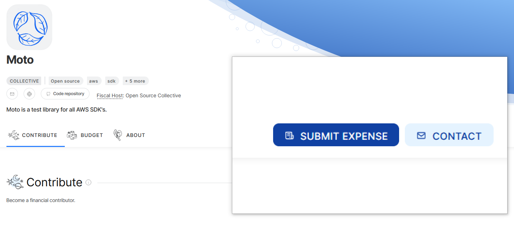

About Moto Payments
What's the purpose of Moto Payments?
Moto's success is all due to its contributors. People who take time out of their day to fix a bug, or add a new feature, so that everyone can benefit.
Because contributors are so important, we think they should also receive a share of the donations that Moto receives.
How does it work?
All the donations we receive are managed by OpenCollective. In order for anyone to receive money, they have to create an expense.
That's why we invite select Moto contributors to create expense, in order to receive some of the donation money.
How do I, as a contributor, claim my money?
If the Payments-page shows that you are eligible to receive money, you need to do three things:
- Create an OpenCollective account
- Let us know your OpenCollective username
- Create an expense against https://opencollective.com/moto
We will then approve the expense and send you the money.
How do I create an OpenCollective expense?
- Go to https://opencollective.com/moto
- Click on
SUBMIT EXPENSEin the topright corner  - Create an account, if necessary
- Select
Invoice, and fill out your payment details as required - In the next screen, add the
Expense titleandDescriptionas outlined on your Payments-page
The system is still in beta - what does that mean?
The overall design and user experience may still change, but the overall functionality should be here.
Please let us know if you feel there's anything missing, or if you're running into problems!
How can I raise a bug, or request a new feature?
Please open a new issue in the Github repo for this project: https://github.com/getmoto/payments
About Moto
What is Moto?
Moto is a full open source library used to test the AWS SDK's. Test your Python code by adding a single decorator, or use our ServerMode to test the SDK of any other programming language.
Where can I learn more about Moto?
The documentation can be found here: http://docs.getmoto.org/
How can I contribute to Moto?
The source code can be found here: https://github.com/getmoto/moto. Feel free to request new features, or raise any bugs that you find.
If you want to help out financially, we are signed up for Github Sponsors - see the 'Sponsor' button at the top of our Github repository.
Alternatively, you can donate directly to our OpenCollective: https://opencollective.com/moto